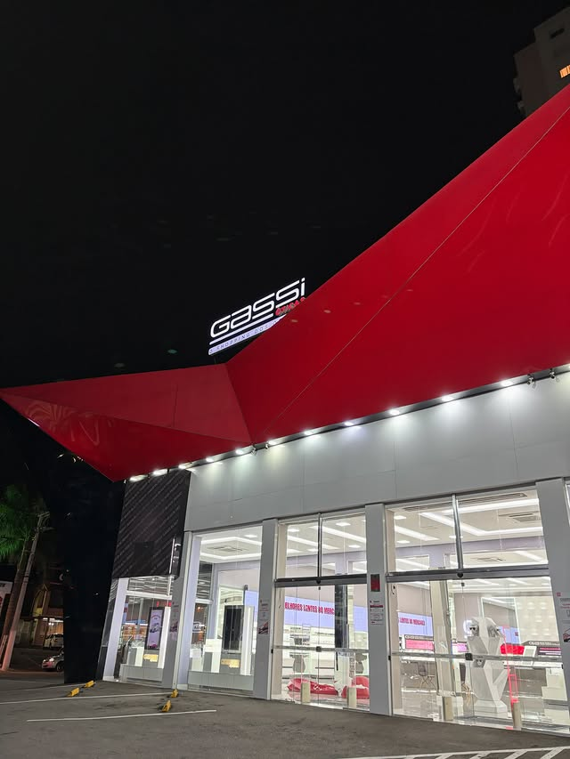
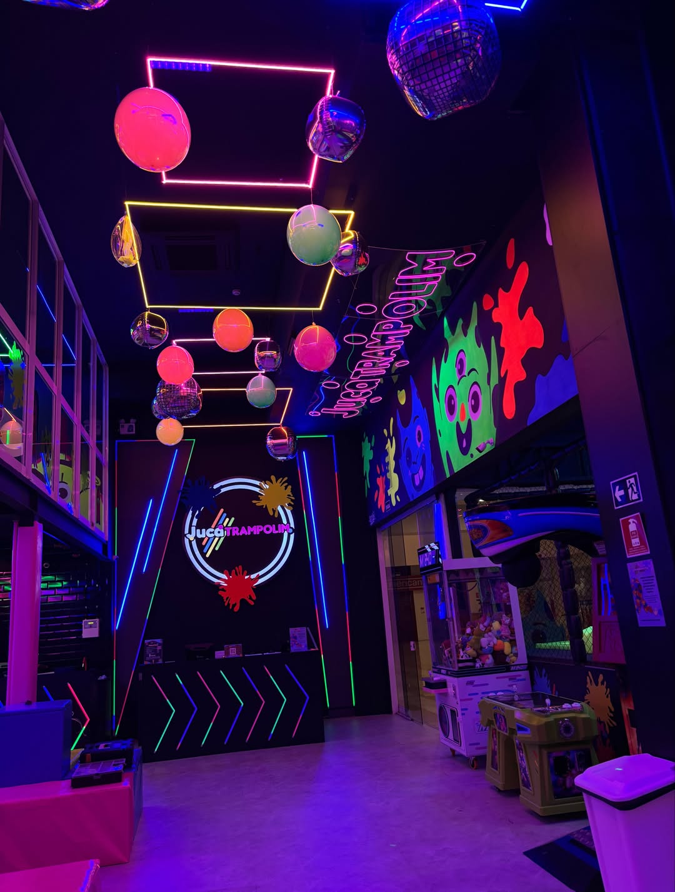
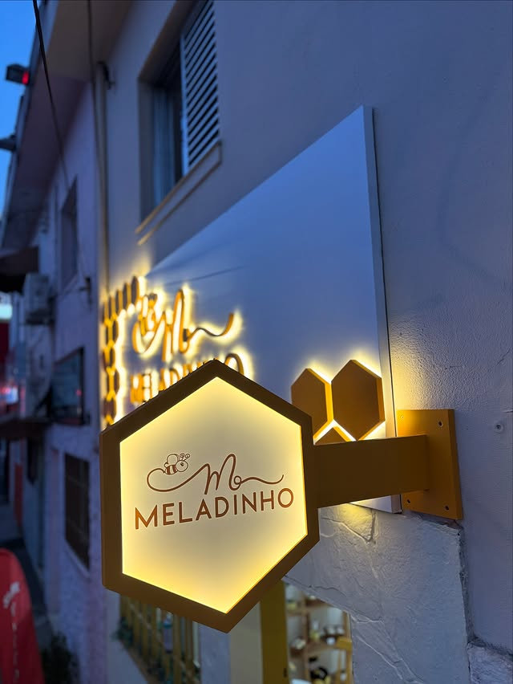
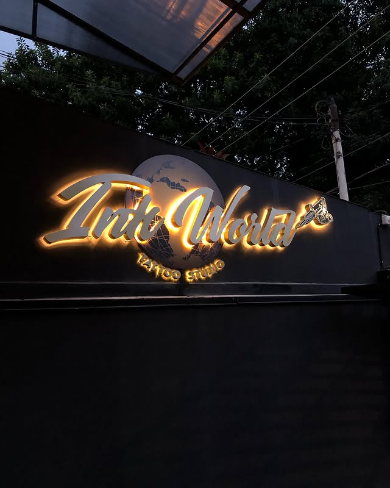
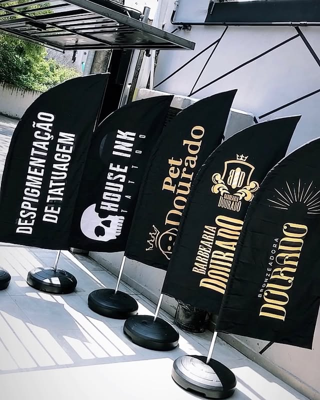

Planejamento
Antes da produção, avaliamos a necessidade do projeto para indicar materiais e formatos adequados.
Sobre a MADC
Conheça a história da MADC e a forma como cada projeto é desenvolvido para unir impacto, acabamento e identidade.





Nossa história
Fundada em 2018, a MADC Comunicação Visual nasceu com o objetivo de transformar ideias em projetos visuais com presença, qualidade e acabamento profissional.
Ao longo dos anos, a empresa passou a atender diferentes segmentos, desenvolvendo fachadas, letreiros luminosos, adesivos, banners, impressões digitais e projetos personalizados para comércios, empresas e marcas que desejam se destacar.
Cada trabalho é pensado de forma individual, considerando a identidade do cliente, o espaço disponível, os materiais mais adequados e o impacto visual que o projeto precisa gerar.
Com atendimento próximo e foco em resultado, a MADC une experiência, criatividade e cuidado técnico para entregar comunicação visual com durabilidade, beleza e personalidade.
Diferenciais
Antes da produção, avaliamos a necessidade do projeto para indicar materiais e formatos adequados.
Cuidamos dos detalhes para entregar peças bonitas, resistentes e coerentes com a identidade visual.
Acompanhamos o cliente do orçamento à instalação para tornar o processo claro e eficiente.
Fale com a MADC e receba uma orientação inicial para o seu projeto.
Falar com a equipe